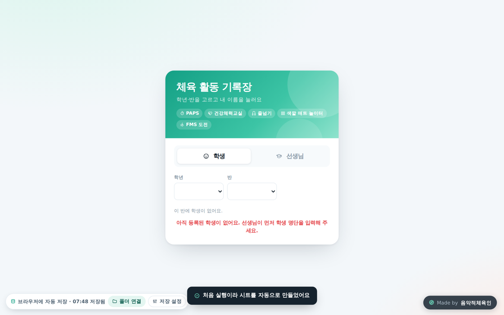
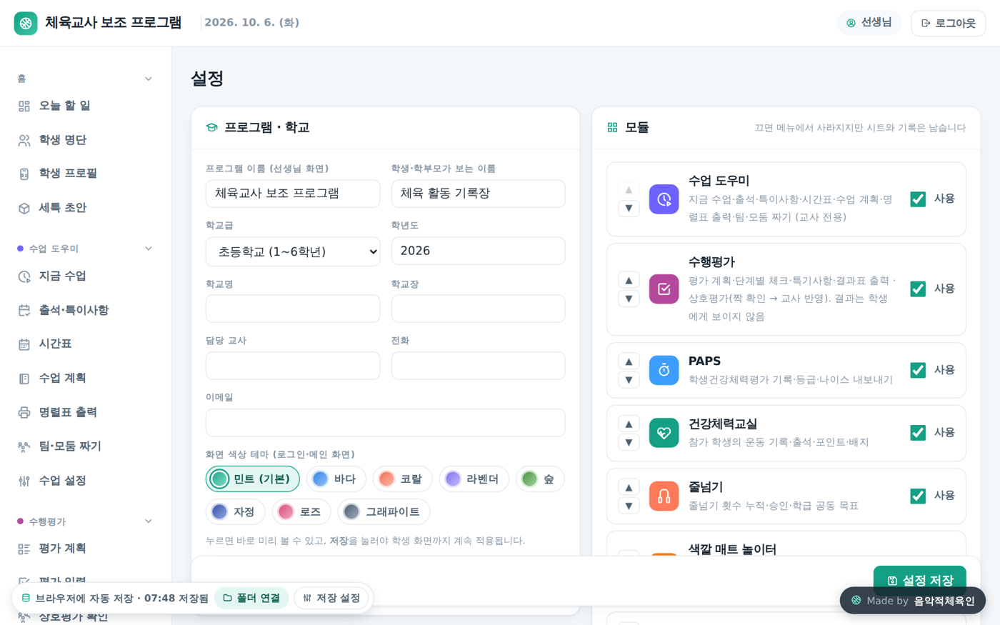

수업 도우미 · 수행평가 · PAPS · 건강체력교실 · 줄넘기 · 색깔 매트 놀이터 · FMS 도전 · 스포츠클럽 여덟 프로그램을 하나로 묶은 통합 프로그램의 오프라인판입니다. 인터넷과 구글 계정 없이 선생님 컴퓨터에서 파일 하나로 돌아가고, 자료는 파일 옆 data 폴더에 저장됩니다. 학생은 자기 이름을 눌러 들어와 기록과 배지를 확인합니다. 온라인판 v3.3.0 과 같은 소스라 화면과 모듈 사용법이 같습니다 — 모듈별 자세한 사용법은 온라인판 설명서 7~10장을 그대로 보시면 됩니다.

설치할 것이 없습니다. 폴더를 하나 만들고 그 안에 pe_assistant_offline.html 을 넣은 뒤 브라우저로 열면 바로 프로그램이 뜹니다.
바탕화면\체육교사보조. 전달받은 pe_assistant_offline.html 을 이 폴더에 넣습니다.1234 로 로그인합니다. 처음에는 설정 화면이 열리니 비밀번호를 바꾸고 학교급(초등학교/중학교)·학교명·학년도를 저장합니다.프로그램은 입력하는 즉시 브라우저 안에 자동 저장하고, 폴더를 연결해 두었으면 data 폴더에도 함께 씁니다. 저장 버튼을 따로 누를 필요가 없고 종료 절차도 없습니다.
체육교사보조\
├ pe_assistant_offline.html ← 프로그램 (이 파일 하나)
└ data\
├ 학생.json 설정.json 수업_기록.json 평가_계획.json PAPS_기록.json 줄넘기_기록.json 줄넘기_급수.json 세특_초안.json … (시트 하나 = 파일 하나)
├ _설정속성.json ← 교사 비밀번호(암호화) · 급수표 등
└ 사진\ ← 활동 사진·인증 사진·우리 반 그림 (jpg)
| 왼쪽 아래 막대 | 하는 일 |
|---|---|
| 저장 상태 | "브라우저에 자동 저장" 또는 "폴더 ○○에 저장 중 · 시각 저장됨". 빨간 글씨면 폴더 쓰기에 실패한 것이니 [폴더 다시 연결]을 누르세요. |
| [폴더 연결] / [폴더: 이름] | 처음 한 번 폴더를 고릅니다. 이미 자료가 든 data 폴더를 고르면 그 자료를 불러옵니다. 연결된 뒤에는 단추에 폴더 이름이 보이고, 누르면 저장 설정 메뉴가 열립니다. |
| 저장 설정 · 다른 폴더로 바꾸기 | 빈 폴더를 고르면 지금 자료를 그 폴더에 새로 저장하고(이사), 자료가 이미 있는 폴더를 고르면 그 폴더의 자료를 불러와 씁니다. |
| 저장 설정 · 지금 저장 | 브라우저와 폴더에 즉시 한 번 더 씁니다 (평소엔 자동). |
| 저장 설정 · 백업 파일 내려받기 / 불러오기 | 사진을 뺀 모든 자료를 체육교사보조_백업_날짜.json 파일 하나로 받고, 불러오기는 그 내용으로 지금 자료를 모두 바꿉니다. 새 학년도 시작도 시작 전에 이 백업을 자동으로 내려받습니다. |

| 항목 | 설명 |
|---|---|
| 교사 비밀번호 | 초기값 1234. 잊으면 7장 자주 묻는 질문. |
| 학교급 | 초등학교(1~6학년) / 중학교(1~3학년). 학년 범위·졸업 학년·PAPS 기준표와 종목·쓸 수 있는 모듈(중학교는 FMS 도전 없음)이 달라집니다. 기록은 지워지지 않습니다. |
| 학교명 · 학년도 · 담당자 | 보고서·명렬표·인증서에 그대로 들어갑니다. |
| 학생이 들어오는 방식 | 이름만 누르기(기본, 교사 컴퓨터용) / 숫자판(태블릿, 4자리 비밀번호) / 입력칸(키보드). |
| 모듈 · 순서 | 쓰지 않는 모듈은 끄고, ▲▼로 사이드바 순서를 바꾸고 저장하면 바로 반영됩니다. |
학생 명단 — 명렬 붙여넣기로 반마다 넣습니다(한 줄에 번호 이름 성별, 성별은 빼도 됨). 학생마다 바뀌지 않는 학생ID가 붙어 새 학년도 시작을 해도 기록이 이어집니다.
오프라인판은 온라인판 v3.3.0 과 같은 소스로 만들어 화면·모듈이 같습니다. 인터넷이 있어야 하는 것만 다릅니다.
| 기능 | 오프라인판 |
|---|---|
| 세특 초안 | 됩니다(이번 학년도 기록으로 초안, 고쳐 쓰면 세특_초안에 저장, 반 전체 복사). AI로 다듬기만 없습니다. |
| 새 학년도 시작 | 됩니다. 시트 보관본 대신 백업 파일(json)을 자동으로 내려받고 시작합니다. |
| 줄넘기 급수 인증 · 급수 인증서 · 우리 반 여행 | 똑같이 됩니다. 급수표는 _설정속성에 저장. |
| 전국 현황판 참여 · 현황판 상장 | 없습니다(현황판은 인터넷 서비스). 인증서 화면에서 "전국 현황판 순위 상장"을 고르면 "참여한 적이 없어요"로 나옵니다. |
| 카메라 줄넘기 판정기 | 됩니다. 판정기 페이지는 인터넷 주소라 뛰는 동안 이 컴퓨터가 인터넷에 연결돼 있어야 합니다(판정기 v0.7 이상). 결과는 이 창으로 돌아와 바로 기록됩니다. |
| AI (응원 문구 · 매트 퀴즈 문제 받기 · 세특 다듬기) | 없습니다. 응원 문구는 준비된 문구를 돌려 쓰고, 퀴즈 문제는 직접 입력·학생 제안으로. |
| 새 화면 · 앱처럼 설치 · 학생용 QR · 사용 학교 알림 · 로그인 새 소식 | 온라인판 전용입니다(오프라인판은 파일이 곧 화면). |
| 사진 · 영상 | data\사진 폴더에 저장. 유튜브 배경 음악은 인터넷이 있을 때만. |
| 인쇄 · 문서 | 인쇄(PDF)·Word(.docx)는 됩니다. "구글 문서로 만들기"만 없습니다. |
학년이 +1 되고 반·번호가 비워지며, 마지막 학년(초등 6학년 · 중학교 3학년)은 졸업 처리됩니다. 새 명렬을 기존 학생 채우기로 넣으면 같은 이름의 학생에게 새 반·번호가 채워지고 학생ID는 그대로라 지난 기록이 이어집니다.
초기화 — 설정 아래 초기화 메뉴에서 모듈별로 지울 항목을 골라 지웁니다. "모든 기록 선택(명단은 남김)"·"명단까지 전부"·모듈마다 "이 모듈 모두"로 한꺼번에 고를 수 있습니다. 설정·기준표는 어떤 경우에도 지워지지 않습니다.
오프라인판은 새 버전이 나오면 pe_assistant_offline.html 파일만 새것으로 바꿔 넣습니다. 자료는 data 폴더에 있으므로 파일을 바꿔도 그대로입니다.
2.x에서 올라오면 세특_초안·줄넘기_급수 같은 새 표가 처음 저장할 때 자동으로 생기고, 설정에 새 항목(급수 인증 사용·여행 코스·메뉴 순서)이 기본값으로 더해집니다. 기존 자료는 그대로입니다.
Q. 자료는 어디에 저장되나요? HTML 파일 안인가요?
A. 파일 안이 아닙니다. 폴더를 연결했으면 같은 폴더의 data 폴더에, 연결하지 않았으면 브라우저 안에 저장됩니다. HTML 파일만 복사해 다른 컴퓨터에 가져가면 빈 프로그램이 열리니 폴더째 복사하세요.
Q. 파일을 열었는데 학생이 한 명도 없어요.
A. (1) 왼쪽 아래 [폴더 다시 연결]을 눌렀는지, (2) 다른 브라우저(Chrome ↔ Edge)로 열지 않았는지 확인하세요. 브라우저가 다르면 브라우저 저장분은 보이지 않지만 폴더를 다시 연결하면 그대로 돌아옵니다.
Q. 매번 [폴더 다시 연결]을 누르는 게 번거로워요.
A. 브라우저 보안 규칙이라 없앨 수 없습니다. 누르지 않아도 브라우저 저장분으로 정상 동작하니, 입력을 마친 뒤 한 번만 눌러 폴더에 반영해도 됩니다.
Q. 교사 비밀번호를 잊었어요.
A. 프로그램을 닫고 data\_설정속성.json 을 메모장으로 열어 TEACHER_PW_HASH 가 있는 줄을 지우고 저장합니다. 다시 열어 [폴더 다시 연결]을 하면 1234 로 돌아갑니다.
Q. 중학교에서도 쓸 수 있나요?
A. 네. 설정 → 학교급을 중학교로 바꾸면 학년 1~3, PAPS 중등 기준표·종목으로 돌아갑니다. FMS 도전은 초등 전용이라 보이지 않습니다.
Q. 학생이 자기 이름이 아닌 다른 친구 이름을 누르면요?
A. 이름만 누르기는 선생님이 옆에서 보는 상황을 전제로 한 방식입니다. 학생이 혼자 쓰는 환경이면 설정에서 숫자판으로 바꿔 비밀번호를 쓰세요.
Q. 줄넘기 응원 문구가 늘 비슷해요. 세특 AI 단추가 없어요.
A. 오프라인판은 인터넷이 없어 AI 대신 준비된 문구를 돌려 씁니다. 온라인판에서는 설정 → AI 키를 넣으면 응원 문구·세특 다듬기·퀴즈 문제 받기가 됩니다.
Q. 온라인판 자료를 오프라인판으로 가져올 수 있나요?
A. 오프라인판은 온라인 사용이 어려운 선생님께 독립적으로 쓰시라고 만든 것이라 서로 자료를 주고받지 않습니다. 각각 따로 운영하세요.
Q. 인쇄가 이상하게 나와요.
A. 각 화면의 인쇄 버튼을 쓰면 그 표만 인쇄됩니다. 브라우저 Ctrl+P를 바로 누르면 화면 전체가 나오니 버튼을 쓰세요. 인쇄 창에서 "배경 그래픽"을 켜면 급수 칩·표 머리글 색이 함께 나옵니다.
Q. 브라우저를 업데이트하거나 컴퓨터를 포맷하면요?
A. 폴더에 저장돼 있으면 안전합니다. 포맷 전에 폴더를 USB에 복사해 두세요. 브라우저 안에만 저장한 경우엔 반드시 백업 파일을 먼저 받으세요.
온라인판 v3.3.0 과 같은 소스. 2.4.1 이후 들어온 것 — 줄넘기 급수 인증·급수 인증서·우리 반 줄넘기 여행·기록 확인 "모두 확인"·줄넘기왕 공동 1위·학생별 누적 표 반 고르기, 세특 초안(AI 제외), 새 학년도 시작(백업 자동), 초기화 한꺼번에 고르기, 사이드바 모듈 순서, 색깔 매트 놀이터 리듬 스텝 새 모습(블록이 앞으로 다가옴), 카메라 판정기 v0.7.4(밝은 디자인). 온라인판 전용인 전국 현황판·사용 학교 알림·AI 키 칸은 보이지 않습니다. 판 번호를 온라인판과 같이 씁니다.
오프라인판에서도 줄넘기·건강체력교실 카메라로 뛰기(판정기 v0.7 이상, 뛰는 동안 인터넷 연결 필요).
온라인판과 같은 소스. 색깔 매트 놀이터 게임 목록 4개씩, 용암 매트 난이도 개편, 연상 점프 우리 반 그림.
색깔 매트 놀이터(게임 10종, 얼음 스텝·배경 음악, 색깔 점프·용암 매트).
즐겁게 사용해 주세요! 사용 중 궁금한 점이 생기면 인디스쿨 음악적체육인에게 쪽지 보내 주세요.
Made by 음악적체육인